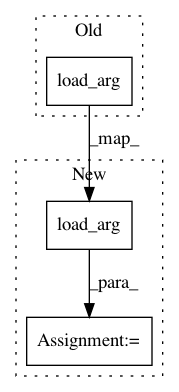

4c3f59b70e98acf5bca2c1c26ebee5a018be0de4,torch/quantization/fx/quantization_patterns.py,Add,convert,#Add#Any#Any#Any#Any#Any#,92
Before Change
op = torch.ops.quantized.add
kwargs = {**self.add_node.kwargs, "scale": scale, "zero_point": zero_point}
return quantizer.quantized_graph.create_node(
"call_function", op, load_arg(quantized=True)(self.add_node.args), kwargs)
// TODO: merge with Add
@register_quant_pattern(operator.mul)
After Change
else:
op = torch.ops.quantized.add
kwargs = {**self.add_node.kwargs}
add_args = (*load_arg(quantized=True)(self.add_node.args), scale_arg, zero_point_arg)
op = quantizer.quantized_graph.create_node(
"call_function", op, add_args, kwargs)
return op
// TODO: merge with Add
@register_quant_pattern(operator.mul)
In pattern: SUPERPATTERN
Frequency: 3
Non-data size: 3
Instances
Project Name: pytorch/pytorch
Commit Name: 4c3f59b70e98acf5bca2c1c26ebee5a018be0de4
Time: 2021-01-28
Author: supriyar@fb.com
File Name: torch/quantization/fx/quantization_patterns.py
Class Name: Add
Method Name: convert
Project Name: pytorch/pytorch
Commit Name: 4c3f59b70e98acf5bca2c1c26ebee5a018be0de4
Time: 2021-01-28
Author: supriyar@fb.com
File Name: torch/quantization/fx/quantization_patterns.py
Class Name: Mul
Method Name: convert
Project Name: pytorch/pytorch
Commit Name: 4884a6ab5188f712c81ad5e452ae0de513e1141c
Time: 2021-03-12
Author: vasiliy@fb.com
File Name: torch/quantization/fx/quantization_patterns.py
Class Name: Cat
Method Name: convert